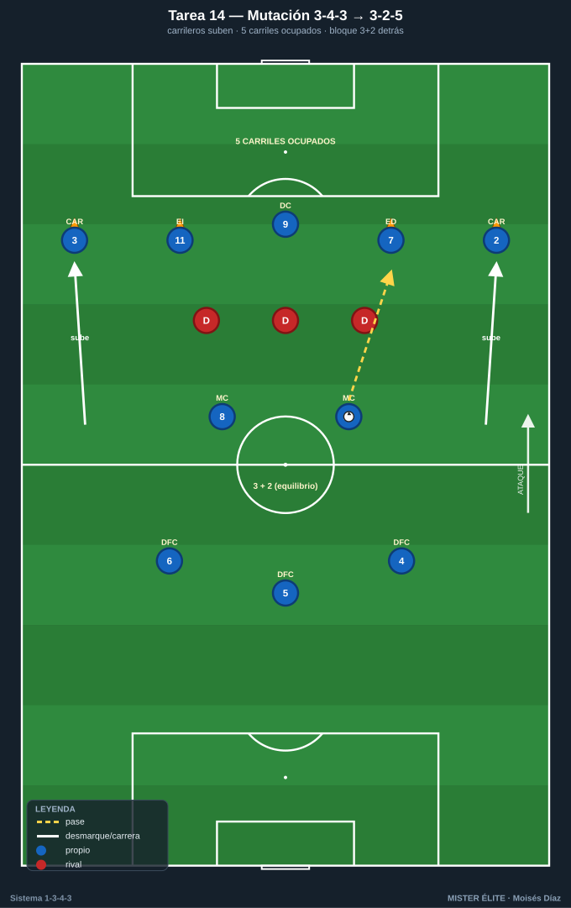
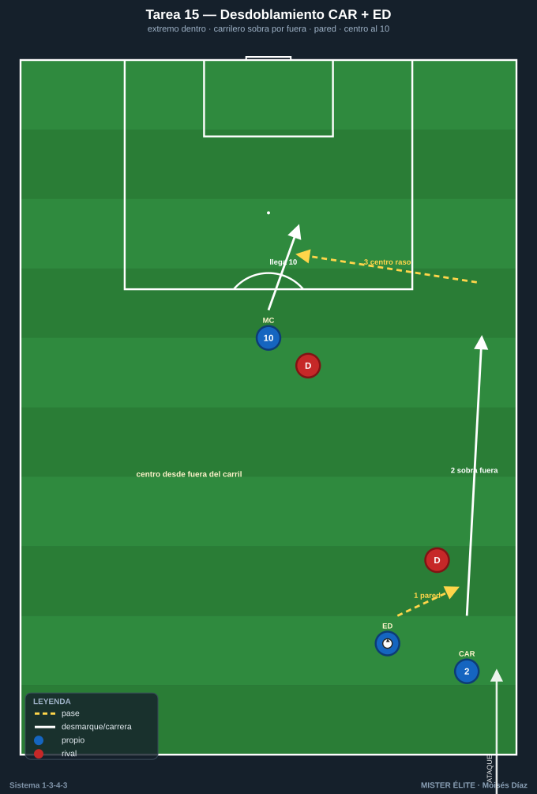
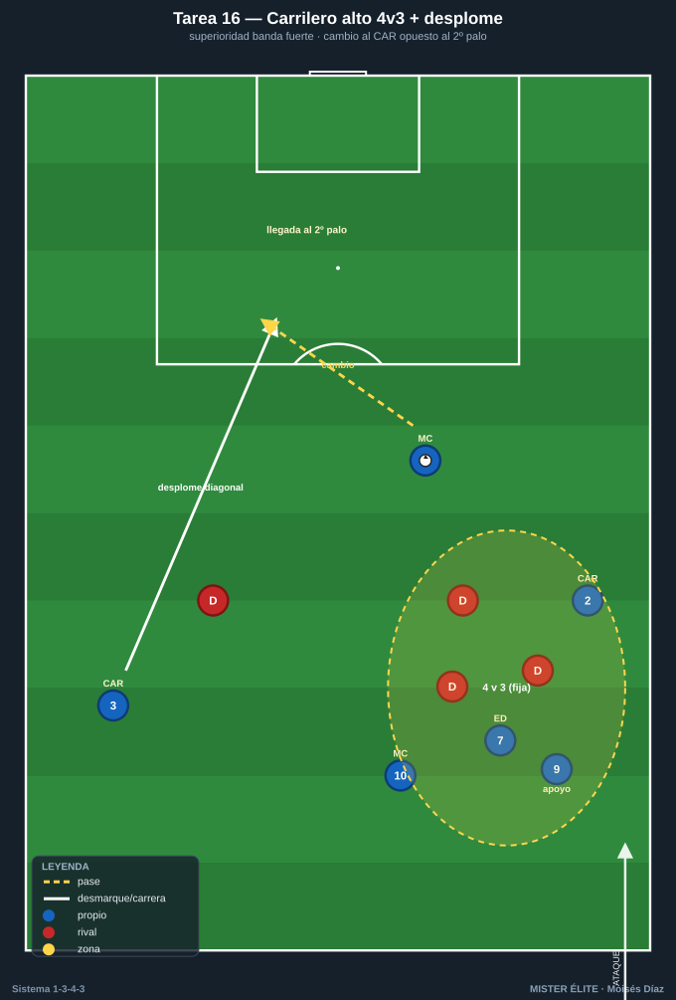
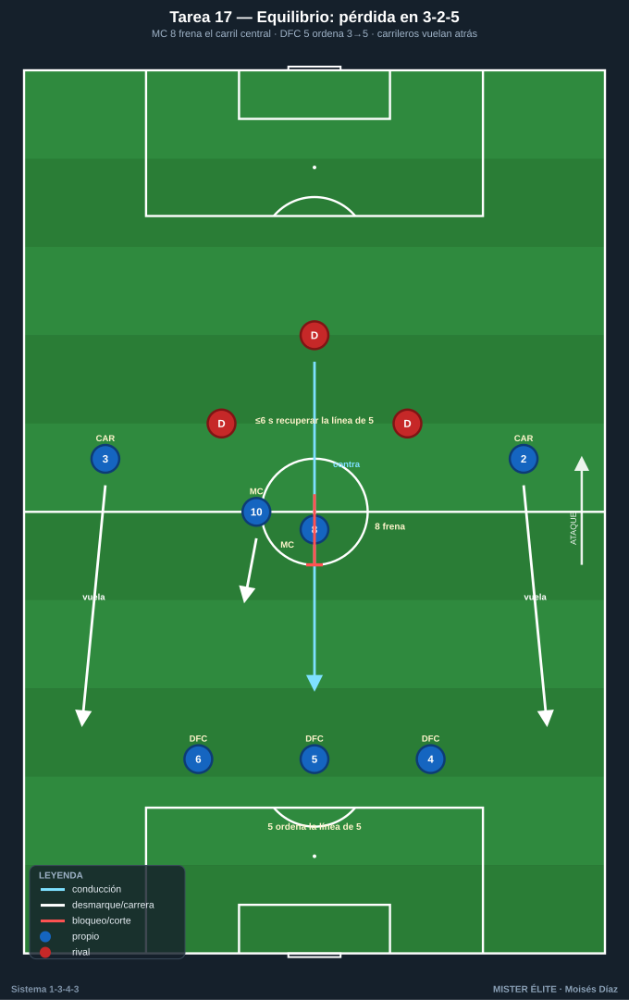
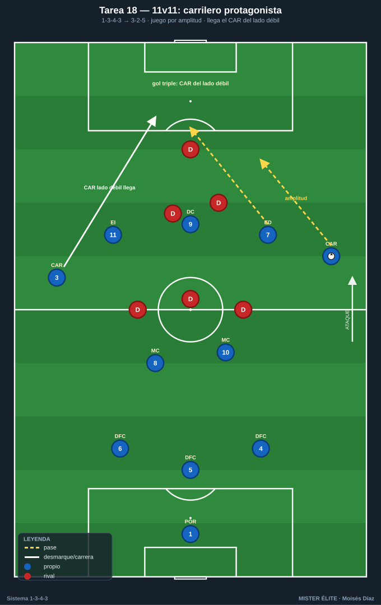

Bloque 4 · Carrileros y amplitud (mutación 1-3-4-3 ↔ 1-3-2-5)
El bloque potente. Mutación con balón, desdoblamiento y gestión del riesgo a la espalda. Categorías: F = Fundamentación · A = Aplicación · S = Específica/competitiva. Leyenda: ◯ atacante · ✕ defensor · → pase · ⇢ conducción · ⟿ desmarque · ▭ portería · ⬡ mini-portería · ⬛ zona/cono.
Tarea 4.1 — Mutación con balón: de 3-4-3 a 3-2-5
- Objetivo: Automatizar la transformación ofensiva: con balón, los carrileros 2/3 suben a la última línea y, con los extremos y el 9, forman una línea de 5; quedan 3 DFC + 2 MC detrás (3-2).
- Organización: Campo completo a lo ancho, 60 m fondo. A los 10 de campo en 1-3-4-3. Marcas de suelo: 5 conos ⬛ en la línea de 5 atacante (banda-pasillo-centro-pasillo-banda). B con 4-5 defensores que ocupan zona.

- Desarrollo: A circula desde la línea de 3 + 2 MC; al progresar, los carrileros suben a pisar sus conos de la línea de 5 mientras los extremos deciden (abrir o pisar por dentro). Hay que ocupar los 5 carriles simultáneamente.
- Provocaciones:
- Gol/punto solo válido si, en el momento del último pase, los 5 carriles están ocupados (1 jugador por carril).
- Los carrileros no pueden recibir por dentro de su carril de banda (amplitud máxima al subir).
- El balón debe pasar por la línea de 2 MC antes de llegar a la de 5 (estructura 3-2 detrás).
- Variantes: F sin oposición (solo ocupar carriles) → A 4 defensores zona → S 5 defensores activos que intentan robar la altura de los carrileros.
- Coaching: "Subir es ataque, ocupar es ataque"; carrileros en la cal; relación carrilero-extremo (uno fuera, uno dentro); los 2 MC dan el equilibrio del 3-2; reconocer el momento de subir (balón controlado en zona media).
- Duración/Categoría: 4×5 min. A.
Tarea 4.2 — Desdoblamiento carrilero-extremo (par de banda)
- Objetivo: Entrenar la sociedad de banda CAR + ED/EI: alternancia interior-exterior, pared, sobra por fuera y centro desde el carril.
- Organización: Banda completa, 35×30 m + zona de finalización con portería ▭ y POR 1. Pareja de A: CAR 2 + ED 7 (y en otra banda CAR 3 + EI 11). 2 ✕ defienden (lateral + central rival). 1 MC 10 entra al área.

- Desarrollo: El par ataca la banda combinando: el extremo se mete por dentro y el carrilero sobra por fuera (o viceversa); el que queda libre por el carril mete el centro raso/tenso para la llegada del 10.
- Provocaciones:
- El centro solo cuenta si lo da el jugador que ataca por fuera del carril de banda (premia la amplitud).
- Obligatorio mínimo 1 pared carrilero-extremo antes del centro.
- Gol del 10 desde el centro raso/tenso = doble; centro alto al área = simple.
- Variantes: F sin defensa, solo coordinación → A 2 defensores pasivos → S 2 defensores activos + portero, y el 10 con un central que le marca.
- Coaching: "Si uno entra, el otro sale"; timing de la sobra; cabeza arriba antes del centro; centro raso al primer palo / tenso a la frontal; tercera ola del 10.
- Duración/Categoría: 4×5 min por banda. A.
Tarea 4.3 — Carrilero alto = superioridad en banda (4v3 con desplome)
- Objetivo: Usar la altura del carrilero para generar superioridad en banda y, tras fijar, cambiar el juego al carrilero opuesto que entra al área (desplome diagonal).
- Organización: Dos pasillos de banda + zona central. 50×44 m, portería ▭ + POR 1. A: CAR 2, ED 7, MC 10 (banda fuerte) + CAR 3 que entra desde el lado débil. B: 3 ✕ del lado fuerte + 1 que vigila el lado débil.

- Desarrollo: A genera 4v3 en banda fuerte (carrilero alto + extremo + interior + apoyo); cuando fija a B, cambia el juego al carrilero opuesto que llega en diagonal al segundo palo.
- Provocaciones:
- Punto válido si el remate llega del carrilero del lado débil desplomándose al área.
- El cambio de juego debe ser antes de 3 pases tras fijar.
- El carrilero del lado fuerte debe estar siempre el más alto de su pasillo.
- Variantes: F sin oposición en lado débil → A 1 defensor lado débil → S defensa completa que bascula al cambio (carrera real del carrilero contra basculación).
- Coaching: Fijar de verdad antes de cambiar; cambio tenso y a la carrera del carrilero opuesto; el carrilero ataca el espacio, no el balón; segunda oleada al segundo palo.
- Duración/Categoría: 4×5 min. A.
Tarea 4.4 — Equilibrio en la mutación: ¿qué pasa si perdemos en 3-2-5?
- Objetivo: Que con los carrileros arriba (3-2-5), el equipo gestione el riesgo: MC 8 cubre, DFC 5 manda el repliegue y el carrilero del lado del balón perdido recula.
- Organización: Campo completo a lo ancho, 65 m. A ataca en 3-2-5 (carrileros arriba). B defiende y, al robar, contraataca con 3-4 jugadores hacia la portería de A ▭.

- Desarrollo: A ataca con carrileros altos. Al perder, se mide la reacción: los 2 MC tapan el carril central, el DFC 5 ordena la línea de 3 a 5 (los carrileros vuelan hacia atrás), y se frena el contra.
- Provocaciones:
- Si B llega a portería por el carril del carrilero subido, gol doble.
- A debe recuperar la línea de 5 en ≤6 s tras la pérdida o B suma punto.
- El MC 8 no puede subir más allá del centro (ancla del equilibrio).
- Variantes: F B contraataca lento → A B a ritmo con 3 → S B contraataca con 4 buscando los pasillos de los carrileros.
- Coaching: "Subes con balón, calculas la pérdida"; el 8 ancla; el 5 manda volver; carrilero esprinta al repliegue; primera ayuda del MC, segunda del carrilero.
- Duración/Categoría: 4×5 min. S.
Tarea 4.5 — 11v11 condicionado: el carrilero como protagonista
- Objetivo: Integrar amplitud, mutación y desdoblamiento en juego real, premiando que el ataque pase por los carrileros.
- Organización: Campo completo, 11v11. A en 1-3-4-3 con mutación a 3-2-5; B en bloque medio.

- Desarrollo: Juego real. Se incentiva con reglas que el ataque de A involucre a los carrileros en amplitud y llegada.
- Provocaciones:
- Gol doble si en la jugada intervino un carrilero por fuera (toque previo o asistencia).
- Gol triple si lo marca o asiste el carrilero del lado débil llegando al área.
- Si A ataca sin que ningún carrilero pase de la línea de medios, el gol no cuenta.
- Variantes: F B pasivo en bandas → A B normal → S B con dos extremos rápidos para castigar la subida de los carrileros.
- Coaching: Carrileros protagonistas; relación con extremos; cambios de orientación para activar la banda débil; equilibrio del 3-2 al subir.
- Duración/Categoría: 3×8 min. S.